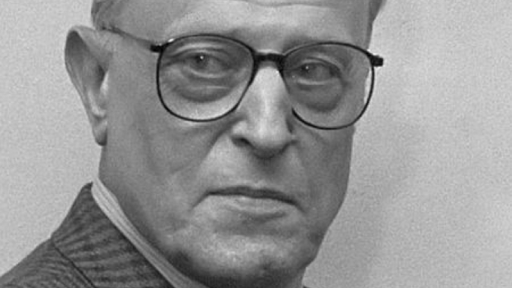

Deel 8 van de volledige werken van WFH verschenen
Binnen het omvangrijke en veelzijdige oeuvre van Willem Frederik Hermans kwam één langlopend project nooit tot voltooiing: een grote autobiografische roman. Wel verschenen er in de vorm van verhalen en novellen losse gedeelten uit dit ‘werk in uitvoering’, waarin het hoofdpersonage Richard Simmillion het alter ego van de schrijver is.
Twee van de vier verhalen uit de bundel Een wonderkind of een total loss (1967) zijn Simmillion-teksten, en ook in De laatste roker (1991), waarin Hermans een groot aantal verhalen verzamelde die door de jaren heen verspreid in kranten en tijdschriften hadden gestaan, werden er enkele opgenomen.
Beide titels verschijnen nu in deel 8 van de Volledige Werken, samen met de in Vier novellen (1993) gebundelde juweeltjes die Hermans in de eerste helft van de jaren tachtig kort na elkaar publiceerde: ‘Filip’s sonatine’, ‘Homme’s hoest’, ‘Geyerstein’s dynamiek’ en ‘De zegelring’. Het bibliofiele werkje De onversleten wandelaar (1994) completeert het geheel. Met het verschijnen van dit deel in de reeks is de publicatie van alle novellen binnen de Volledige Werken – eerder verscheen al deel 7 – nu compleet.